今日趋势
一副能替你读路牌、翻译和描述眼前物品的眼镜，也是一枚朝向别人的摄像头。Google把预购价格、十二月开售日、账户地区和成年资格写进同一份公告，并承诺录制指示灯遭遮挡时停止录制。便利是佩戴者获得的，能否清楚察觉拍摄却关系到旁观者；产品上市后的实际表现，还需要使用中的证据。
模型端，Hydrogen主打快速执行，IBM的LLMON实验则尝试用可寻址区块区分指令和资料，二者回答不同的问题。企业端同样有两张账：Amplitude报告建议卡发送量的一日相对增长，Nebuly想计算员工时间和客户业务价值。实验指标、可用服务、公司自报与真正兑现的经营结果，本期逐项说清。
Google本次智能眼镜系列官方产品图
Google眼镜开放预购395美元起
来源: Google官方智能眼镜预购公告 · 2026-11-13 · 原文链接
Google联合Gentle Monster、Warby Parker及三星推出智能眼镜预购，Warby Parker款395美元起，Gentle Monster款449美元起，12月10日正式开售。眼镜约41克，配1200万像素摄像头，标称续航最长九小时，可调用Gemini、语音翻译和视觉描述，部分功能另有服务条件。使用限美国、韩国的兼容成年Google账户，并须匹配指定Pixel、三星或iPhone机型与系统；不是所有手机都能直接配对。官方称Gemini视觉画面不存入历史、不用于训练或广告，处理前自动遮蔽旁观者人脸；自行拍照录像时指示灯亮起，遮挡或关闭灯会停止录制。这些是产品设计承诺，尚非独立实测结果。
Janet 锐评：
395美元买到的不只是一副镜架，还有持续调用相机和助手的关系。对低视力用户，边走边问可能很有帮助；对迎面走来的人，一盏灯能否被看见、被理解，却没有那么理所当然。遮挡灯就停录的设计值得认真检验，也值得保留那枚随时关机的开关。预购先发生，日常佩戴中的信任还要慢慢建立。
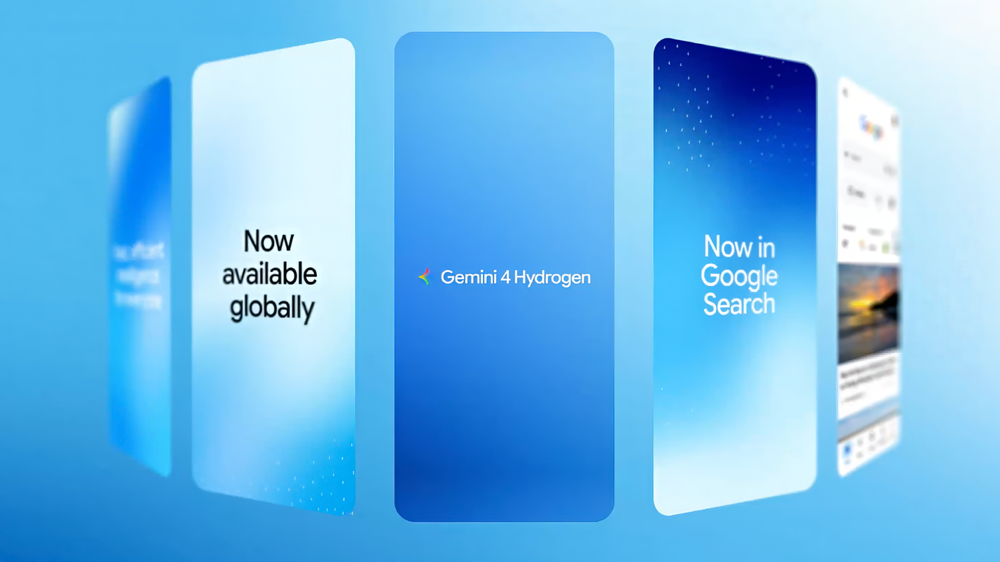
Google本次Hydrogen搜索界面示意
Google搜索接入Hydrogen多路查询
来源: Google Search官方产品更新 · 2026-11-13 · 原文链接
Google宣布Gemini 4 Hydrogen向全球搜索用户提供服务，重点改善复杂、多条件问题的理解，通过同时查询多个子主题提供更多相关网站链接，并生成图片、比较表格与交互工具。更新覆盖AI Mode已支持的语言，具体界面仍受产品可用范围影响。发布文中的准确性与效果描述属于Google说明；查询数量增加、回答更直观，都不能单独证明每条引用足以支持最终答案，也不表示所有传统搜索结果都改成同一种生成页面。
Janet 锐评：
搜一双鞋和规划一次搬家，本来就需要不同的答案形状。多路查询有机会少漏条件，表格也方便比较；但如果最关键的一格没有可靠出处，整齐的版面反而会替错误增加说服力。
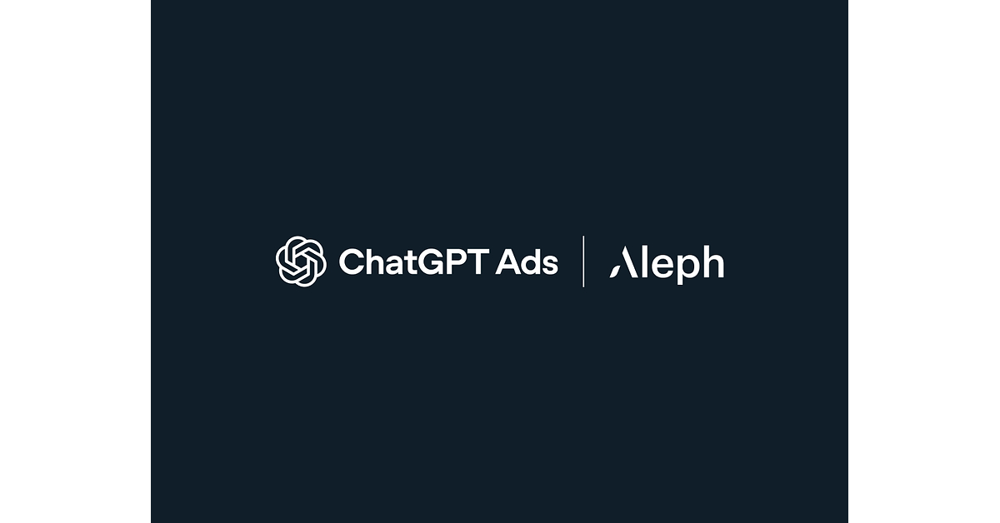
Aleph本次ChatGPT Ads转售合作官方发布图
ChatGPT广告加入44市场本地购买渠道
来源: OpenAI官方广告转售公告 · 2026-11-13 · 原文链接
OpenAI宣布Aleph成为44个市场的ChatGPT Ads独家本地转售商，提供当地签约、开票、付款条件、培训和活动支持，覆盖拉美、欧洲与中亚、中东非洲及部分亚太市场。广告主仍可通过Ads Manager及既有全球技术伙伴购买，本次主要增加购买渠道，不改变广告可投放地区。公告特别说明，香港商家可经授权伙伴面向已开放广告的市场投放，但ChatGPT及其广告并未因此向香港用户开放；不能把转售协议写成44地消费者服务同时上线。
Janet 锐评：
本地发票和有人接电话，常常比再加一个广告格式更能推动企业下单。这次扩张先解决卖给谁、怎样付款；商家所在地与用户能看到广告的所在地，是两张不同的地图。
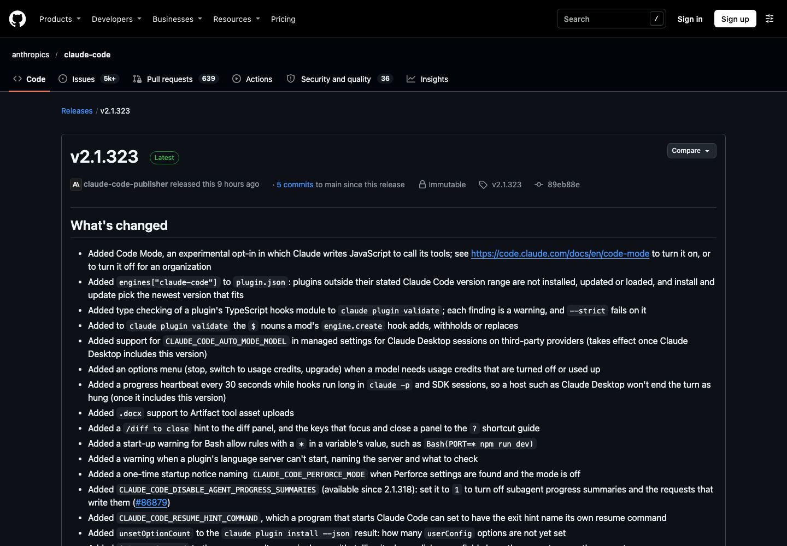
Claude Code v2.1.323原始版本说明截图
ClaudeCode加入实验代码工具调用模式
来源: Anthropic官方Claude Code v2.1.323版本说明 · 2026-11-13 · 原文链接
Claude Code发布v2.1.323，加入须主动启用的实验性Code Mode，由Claude编写JavaScript调用工具，并为插件增加兼容版本范围和TypeScript钩子类型检查。版本同时修复多项权限、沙箱和后台身份问题：指定身份不存在、被修改或遭覆盖时，相关后台会话应停止并提示，而非转用另一登录身份。部分Desktop集成须等待桌面端纳入此版本；实验工具调用也不代表可以略过权限配置或把全部修复视为绝对安全保证。
Janet 锐评：
写几行代码一次调完工具，可能减少来回对话。这很实用。更让我在意的是后台会话终于明确说“身份变了，停下来”：一段工作悄悄换成另一个账户继续跑，省掉的那点等待并不划算。
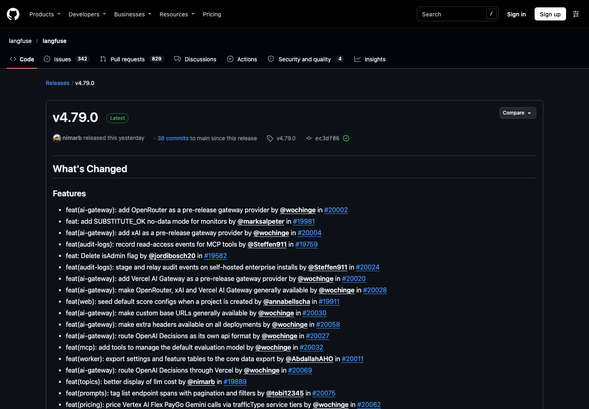
Langfuse v4.79.0原始版本说明截图
Langfuse开放三类网关并记录MCP读取
来源: Langfuse官方v4.79.0 Release · 2026-11-13 · 原文链接
Langfuse v4.79.0将OpenRouter、xAI和Vercel AI Gateway接入标为正式可用，并开放自定义服务地址及额外请求头。版本加入MCP工具读取访问的审计事件，支持自托管企业安装的审计事件暂存与转发，同时修复密钥所有者组织角色变化后的解析缓存失效问题。版本说明并未承诺所有部署拥有相同企业权限，也不能由“已记录读取”推断所有历史访问都能追溯；接入能力、日志留存和权限变更后的行为仍是不同配置。
Janet 锐评：
写操作容易引人注意，读走的数据却不会自己留下一个空洞。读取日志进入MCP工具链，至少给事后追问多了一条线索；权限改完后旧缓存是否还有效，也同样影响这条线索的可信度。
Google Gemini 4 Hydrogen本次发布主视觉
Hydrogen发布百万上下文执行模型
来源: Google DeepMind官方Hydrogen公告 · 2026-11-13 · 原文链接
Google发布Gemini 4 Hydrogen，定位日常编程和代理任务执行，提供low、medium、默认high与xhigh四档思考等级。一百万tokens上下文内统一按每百万输入1.50美元、输出7.50美元计价，公告列出最高一百万tokens输出能力。模型向API、AI Studio、Gemini应用和搜索等入口铺开；应用免费用户通过自动选择获得合适任务的访问，Antigravity则面向付费Pro或Ultra用户。厂商称默认档完成部分测试较3.8 Flash快2.5倍，测试条件和任务构成影响比较，不能当作所有请求的速度保证。
Janet 锐评：
执行模型的吸引力在于等待更少、账单更清楚。四档思考也给人选择余地：一份会议提纲和一场复杂调试，本就不该默认消耗一样多的时间；排行榜领先多少，仍要落回各自的任务来判断。
IBM本次LLMON静态间接提示注入评估图
IBM发布LLMON微调预览分开指令资料
来源: IBM Granite团队官方技术文章及模型卡 · 2026-11-13 · 原文链接
IBM Granite团队发布3B与8B的Granite 4.1 LLMON实验预览，以既有base检查点进行后训练，按Apache 2.0提供权重。这是官方微调预览，并非新基础模型。LLMON给指令、资料、工具定义和结果分别加可寻址区块，再用exec区块指明执行哪条指令、使用哪些输入。团队称通用能力接近既有Instruct版，在静态间接提示注入测试中改善抵抗能力；该行为由模型学习而来，不是强制执行的安全隔离，尚不宜生产使用，对多轮自适应攻击的改进仍在研究。
Janet 锐评：
文档里也会出现命令句，工具结果也可能藏着诱导。给每段内容标清身份，再训练模型按引用关系行事，比祈祷它读懂引号更有章法。可贵的是IBM同时写明：这是学出来的行为，不是硬隔离。实验预览适合用来拆解失败，不能因为一张静态攻击成绩图，就把长期对抗中的权限问题交给它独自承担。
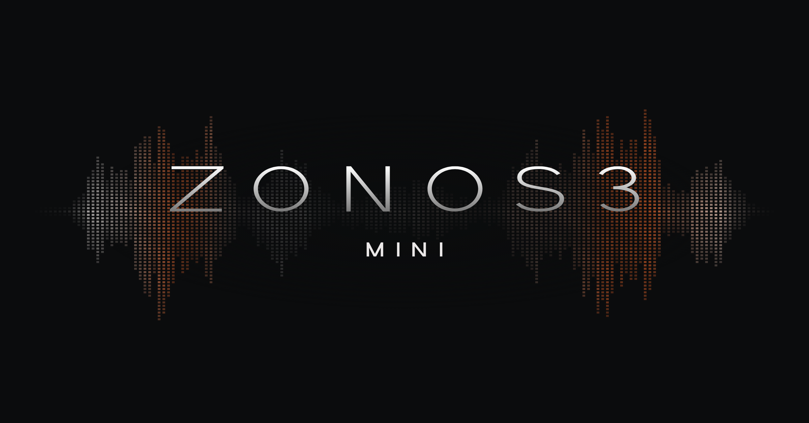
Zyphra本次ZONOS3-Mini架构与语音技术图
Zyphra发布小型语音模型新技术解读
来源: Zyphra官方团队Hugging Face技术解读 · 2026-11-13 · 原文链接
Zyphra在窗口内发布ZONOS3-Mini技术解读，介绍支持43种语言、零样本音色克隆及表达控制的语音合成模型，激活参数约一亿、总参数约八亿，权重为Apache 2.0，运行代码为MIT许可。文章自报Pixel 9浏览器首段音频延迟低于570毫秒，M3 MacBook Air低于150毫秒，测试环境不同不能直接横比。这是当天新报道但基础事件较早：作者原文署11月11日，权重仓库更早建立，不能把本次解读当成模型当天首次诞生。
Janet 锐评：
短句一开口要等多久，决定语音助手像对话还是留言机。手机和笔记本的延迟数字很具体，值得用自己的文本再听一遍；支持一种语言，也不等于那种语言的情绪、专名和长句都已经自然。
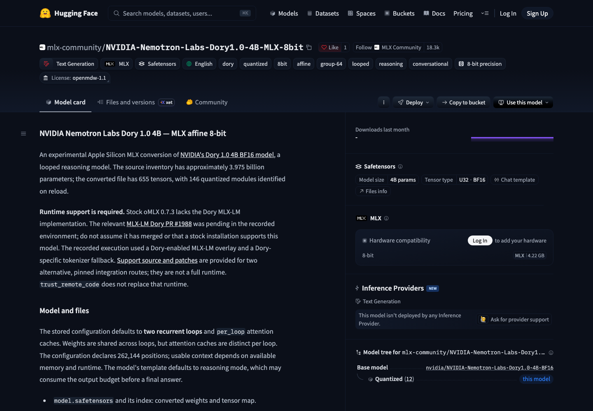
本次Dory八位MLX转换模型卡原页截图
社区发布Dory八位MLX实验转换版
来源: mlx-community原始转换模型卡 · 2026-11-13 · 原文链接
mlx-community发布NVIDIA Nemotron Labs Dory 1.0 4B的八位MLX转换版，面向Apple Silicon，使用group size 64的affine量化，部分参数保留BF16，默认两次循环推理。它是社区转换版，不是NVIDIA当天新基础模型。模型卡明确要求另装支持Dory的运行实现：所记录的标准oMLX 0.7.3不支持，普通安装或trust_remote_code不能替代补丁。作者仅报告特定补丁环境的有限验证；局部问答分数与BF16测试方法未对齐，不能据此证明量化无损、完整服务兼容或长上下文稳定。
Janet 锐评：
“下载完就能用”在这里还差一个运行时。卡片把缺什么、只测了什么写出来，比把一次成功请求包装成全面兼容更有帮助；八位精度只是文件属性，不是整套软件已经准备好的保证。
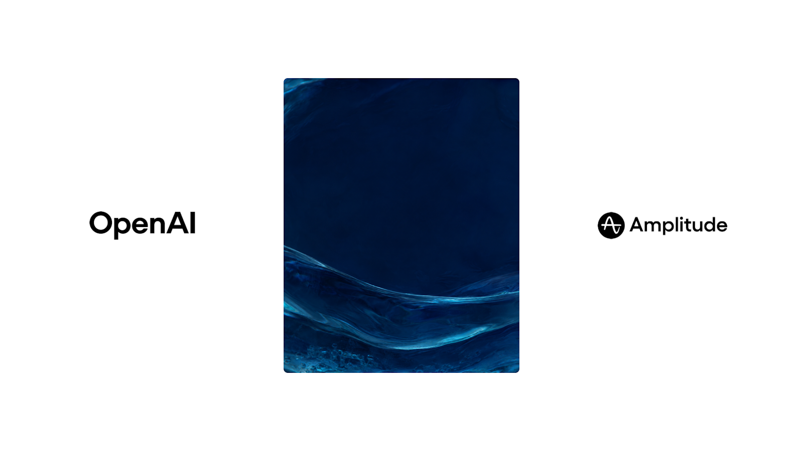
OpenAI本次Amplitude Wave产品案例主视觉
Amplitude用建议卡实验公开业务增量
来源: OpenAI与Amplitude官方客户案例 · 2026-11-13 · 原文链接
OpenAI发布Amplitude客户案例：Wave结合会话回放、分析数据与代码寻找产品改进机会，再向包括Codex在内的编程代理交付技术方案。公司自报，在100份回放样本中80人自行输入、12人选择建议；改用基于近期图表和来源页面的个性化建议卡后，A/B实验首日经卡片发送的消息较对照组增加160%。这是当天新案例、既有测试结果，增幅只针对该指标，不是总活跃、收入或普遍生产力。文中将交付周期从约一月缩短至一两天列为公司估计；长期留存、样本分配与完整统计检验未在摘要中给出。
Janet 锐评：
80个人绕过建议卡，未必说明他们不想用助手，也可能只是卡片没接上手头的事。这个案例最有说服力的部分，是保留自由输入、改一个小入口、再看对照结果。160%的相对增幅很亮眼，却仍只属于卡片发送这一格。能从哪里发现问题、用什么指标验证修复，比把每次多发消息都算作业务成功，更值得带走。
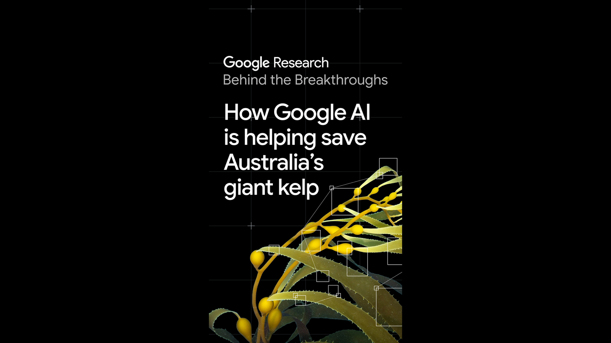
Google本次巨藻恢复项目报道配图
Google公开AI辅助海藻基因分析进展
来源: Google与CSIRO合作项目官方进展解读 · 2026-11-13 · 原文链接
Google发布与澳大利亚CSIRO合作的新进展解读：团队已发布两份澳大利亚巨藻高质量参考基因组，并训练DeepVariant版本分析巨藻DNA，研究覆盖塔斯马尼亚沿岸40个地点采集的600份野生样本。当地种群只剩历史规模约5%的数字来自项目说明。当天新报道涉及较早开展的基因与育种工作，目标是为多样、耐热巨藻重新种植提供基础，不能写成模型已经修复海藻森林、提高海温耐受性已在大范围海域得到证实。
Janet 锐评：
基因组、实验室杂交和重新种回海里，中间隔着好几道真实的工作。AI帮助分析600份样本，价值可以很扎实；海藻能否在下一轮热浪中活下来，还得由海水和时间回答。
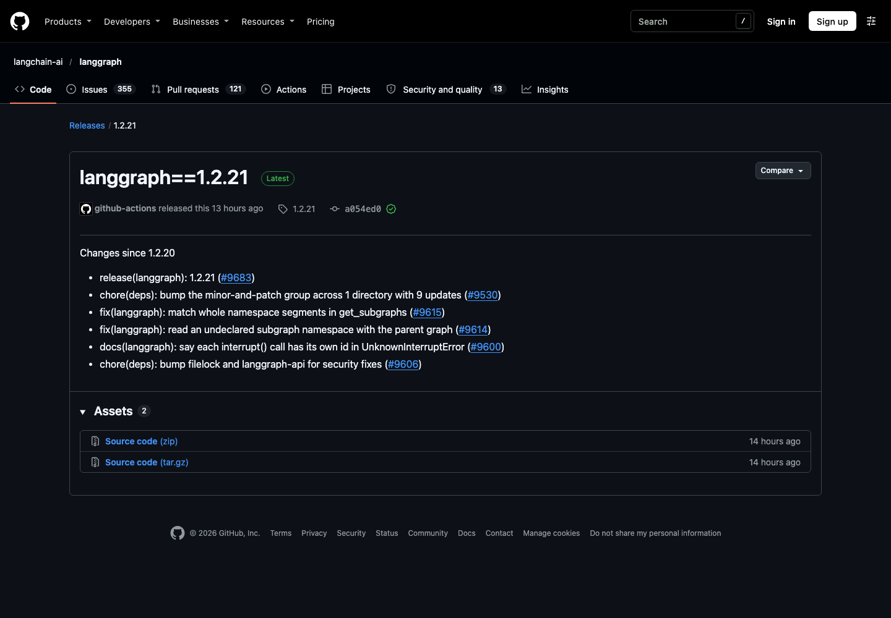
LangGraph 1.2.21原始修复说明截图
LangGraph修复子图匹配并支持完整路径
来源: LangGraph官方1.2.21 Release · 2026-11-13 · 原文链接
LangGraph 1.2.21修复get_subgraphs对子图命名空间的匹配，要求按完整路径片段比较；读取未显式声明的子图命名空间时改由父图处理。版本还澄清每次interrupt调用拥有独立标识，并更新部分安全相关依赖。它是既有工作流框架的维护发布，不是新推理模型。对嵌套代理而言，相近名字不应自动代表同一子流程；具体升级效果仍取决于应用如何组织子图、保存状态和恢复中断，版本条目没有保证一切历史状态都自动迁移。
Janet 锐评：
子流程名字差一小段，落到执行现场可能就是另一份状态。完整片段匹配听起来很细碎，却比用模糊前缀猜路径稳妥；任务跑得越久，这种细节越容易影响人能否放心接着上次继续。
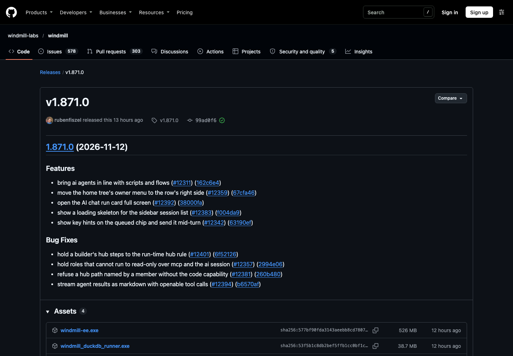
Windmill v1.871.0原始功能与权限修复截图
Windmill收紧只读角色的代理执行权限
来源: Windmill官方v1.871.0 Release · 2026-11-13 · 原文链接
Windmill v1.871.0调整AI代理与既有脚本、流程的功能衔接，支持全屏查看AI聊天运行卡和展开工具调用。权限修复要求无运行权的角色通过MCP和AI会话仍保持只读，并拒绝缺少代码能力的成员指定相关Hub路径；构建器中的Hub步骤也须遵循运行时规则。这些具体修复说明，聊天入口与传统界面可能触及同一资源，却需要一致执行权限；公告未证明所有第三方集成的访问路径都已覆盖。
Janet 锐评：
同一个人换成自然语言提问，不该凭空多出执行权限。只读能否一路只读，比聊天框看起来多聪明更影响日常协作；否则管理员以为已经分清的角色，会在另一个入口重新混在一起。
投资与商业
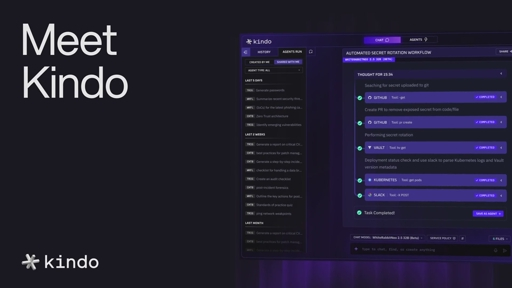
Kindo本次融资公告所附控制中心产品视频缩略图
Kindo融资三千万美元扩建代理控制中心
来源: Kindo经PR Newswire发布的官方融资公告 · 2026-11-13 · 原文链接
Kindo宣布新获3000万美元融资，由Crosspoint Capital和Forgepoint Capital共同领投，累计融资5760万美元，后者不是本轮金额。资金用于销售拓展及企业AI控制中心、Deep Hat产品开发。平台将代理的访问、行为、调用成本和结果集中呈现，可配置预算、告警及硬支出上限，部分深度介入能力依赖自有运行框架。公司称2026年收入同比增长约800%，未披露对应绝对收入；既有客户节省成本案例为公司与客户自报，不能视为新客户普遍能实现的回报。
Janet 锐评：
代理失败的那次运行也会花钱，把它从成功率之外捞进账本很有必要。Kindo卖的是看见和介入的能力；预算上限解决“最多花多少”，却不会自动回答“这项工作值不值”。
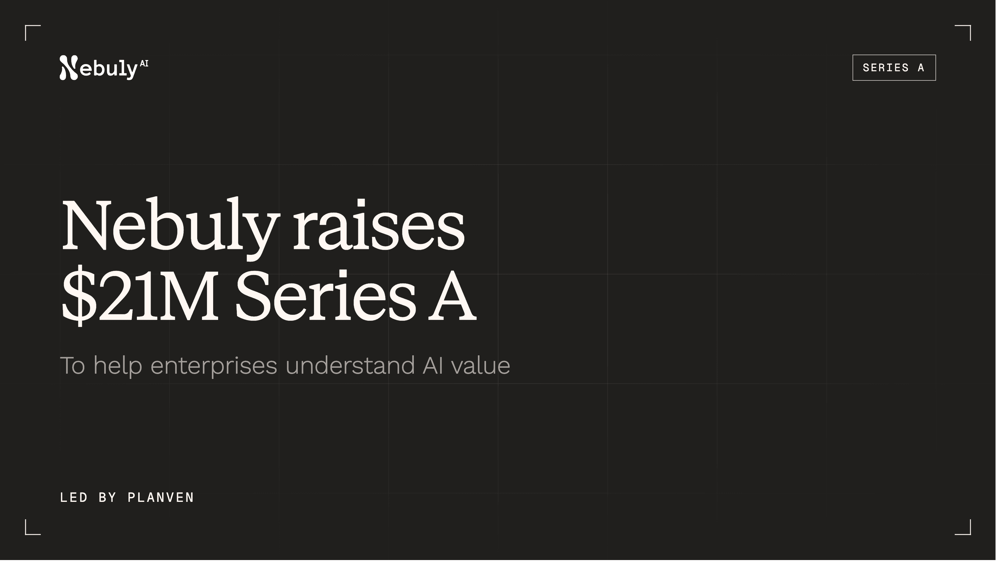
Nebuly本次A轮融资公告主视觉
Nebuly融资两千一百万美元量化AI回报
来源: Nebuly官方A轮融资公告 · 2026-11-13 · 原文链接
Nebuly宣布完成2100万美元A轮融资，由Planven领投，Exor Ventures、Tenacity Capital、TGVG Capital及经Founders Factory参与的Fastweb+Vodafone等跟投，CDP Venture Capital亦提供支持。资金将用于欧美市场团队扩张和平台开发。公司连接既有第三方与自建助手，分析员工节省时间、增加的工作能力，以及客户收入影响、流失和增购信号；计算假设可由管理层与财务查看调整，支持本地或私有云部署。客户与六位数合同属于公司披露，公告未提供估值或经独立审计的普遍投资回报率。
Janet 锐评：
省下一小时，并不必然多出一小时可出售的产出，更不必然减少一小时工资。Nebuly愿意把计算假设摊开，是比堆提示词次数更好的起点。真正容易争论的是归因：收入增加多少来自助手，多少来自产品、价格和人的经验。财务能修改假设，也就应该能看到结论随假设变化多大；一个漂亮总数不该盖住这种敏感性。
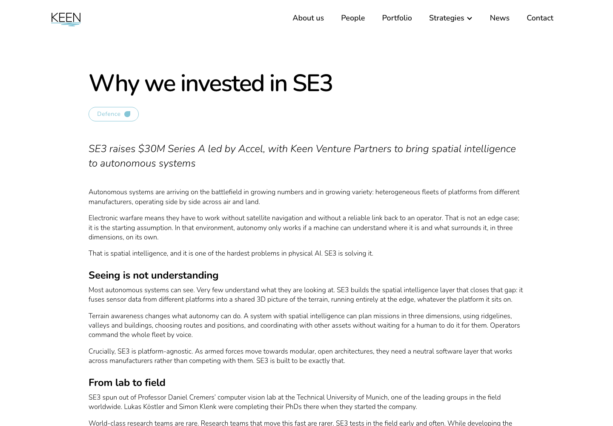
Keen本次SE3融资原始投资说明截图
SE3融资三千万美元扩展端侧空间智能
来源: SE3与投资方Keen共同披露的融资公告 · 2026-11-13 · 原文链接
慕尼黑SE3宣布完成3000万美元A轮，由Accel领投，Keen Venture Partners、Lakestar和Seedcamp参与。公司将不同厂商无人系统的传感器数据融合为共享三维环境理解，强调在端侧运行、应对卫星导航或通信受干扰的条件。资金用于工程、商业及运营团队，巩固德国和乌克兰业务并计划开设英国办公室。已交付数千套系统及现有合作关系来自公司与投资方公告，未披露估值；实际自主能力及可靠性不能仅由融资规模或战场部署叙述推定。
Janet 锐评：
不同厂商的设备能否看懂同一片地形，是比多卖一架机器更难绕开的接口问题。SE3选择中立软件层，有明确生意；“在复杂环境运行”的说法，也需要与可检验的可靠性数据一起阅读。